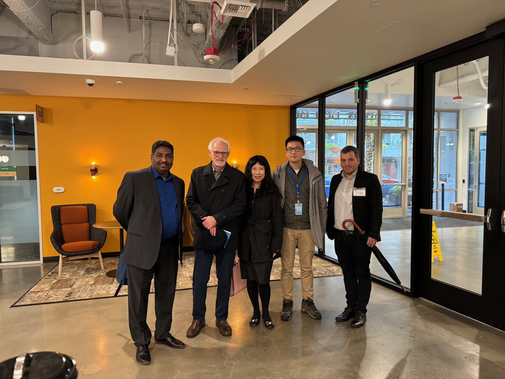
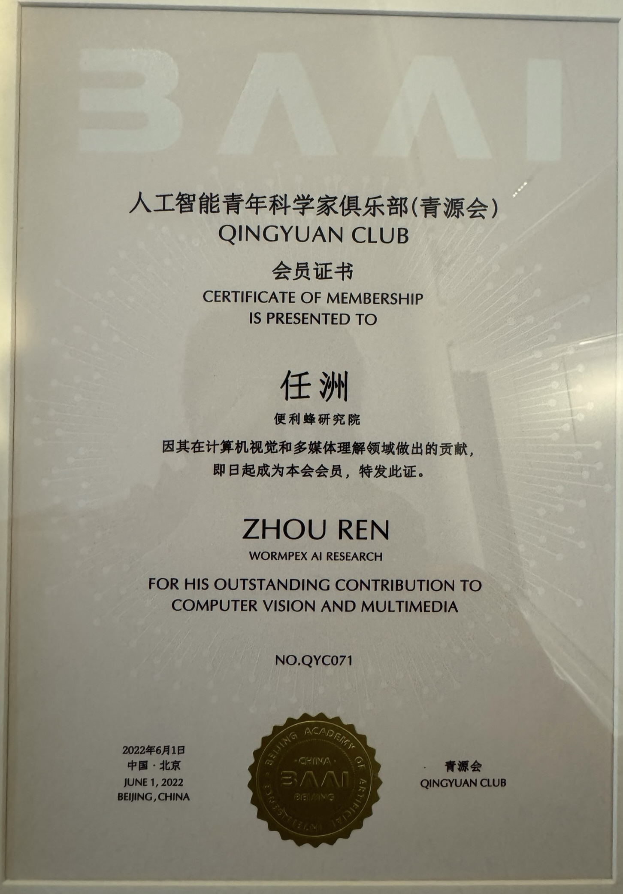

[12/23] I am delighted to host Tom Coughlin, IEEE president 2024 and IEEE Seattle Section leadership’s visit to Amazon.

[06/23] I am invited to serve as a mentor (Industry Leader) at the CVPR 2023 Speed Mentoring Event to meet and share experience with hundreds of students.
[06/23] I am invited to serve as an Area Chair of WACV 2024 and Financial Chair of ICME 2024.
[10/22] I have joined Amazon AWS to work on Just Walk Out Technology.
[06/22] I am invited to be a member of Qingyuan Club (a Chinese top AI young scientist club) for my outstanding contribution to Computer Vision and Multimedia.

[06/22] I am invited to serve as an Area Chair of WACV 2023.
[01/22] I have been elected to serve as the new Chair of Industrial Publication Committee, at Asia-Pacific Signal and Information Processing Association (APSIPA).
[12/18] I have joined Wormpex AI Research, to assist our executives set up and grow a team in visual recognition & analysis for future retail business at BianLiFeng (便利蜂).
[11/17] We have won the 2nd place in NIPS’17 Adversarial Defense Challenge among 107 teams; and were invited to present in NIPS’17 Competition Track (for details, please check our work).
{kind=link}